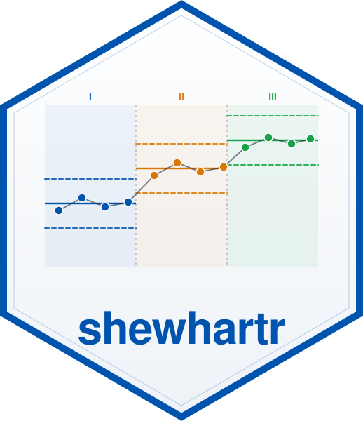
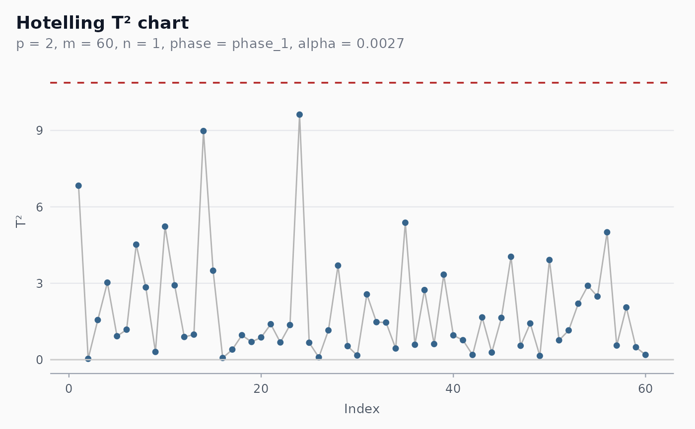

Hotelling T-squared multivariate control chart
Source:R/chart-hotelling.R
shewhart_hotelling.RdConstructs a Hotelling T² chart for joint monitoring of p
correlated quality characteristics. Use this chart when the
variables genuinely co-vary — a classical example is a chemical
process where temperature, pressure and flow rate are mechanically
coupled, and a fault that breaks the coupling moves them off the
joint distribution but possibly stays inside each marginal limit.
Arguments
- data
A data frame.
- vars
Tidy-select expression for the columns containing the variables to monitor jointly (
c(x1, x2, x3),tidyselect::starts_with("temp"), etc.). Must select at least 2 columns.- subgroup
Optional tidy-eval column for rational subgrouping. If supplied, all rows sharing a value of this column are treated as a single subgroup. If
NULL(default), every row is its own observation (individual-observations chart).- index
Optional tidy-eval column for the x-axis. If supplied, must vary across observations (or across subgroups, if
subgroupis supplied).- phase
One of
"phase_1"(default; retrospective) or"phase_2"(prospective monitoring of new observations against parameters estimated from the same data).- alpha
Type-I error rate per observation. Default
0.0027, matching the conventional Shewhart3-sigmafalse-alarm rate.- locale
One of
"en","pt","es","fr".- verbose
Logical. Print progress messages?
Value
A shewhart_chart object of subclass shewhart_hotelling.
The augmented tibble has columns .t2 (the statistic), .upper
(UCL — constant within a chart), .flag_signal and .flag_any,
and one .contrib_<var> column per monitored variable giving
that variable's marginal contribution to the alarm (Mason et al.
1995). The limits slot contains the chart-level UCL; the
metadata slot stores the variable names, subgroup column name,
and the parameters p, m, n, phase, alpha that
determined the limit.
Details
Both individual observations (subgroup = NULL) and rationally
subgrouped observations (subgroup supplied) are supported. The
chart selects the appropriate exact small-sample limits for the
selected phase (Phase I uses retrospective limits derived from
a Beta or F distribution; Phase II uses the slightly wider limits
that propagate the Phase I parameter uncertainty to a fresh
observation).
References
Hotelling, H. (1947). Multivariate quality control. In: Techniques of Statistical Analysis. McGraw-Hill.
Tracy, N. D., Young, J. C., & Mason, R. L. (1992). Multivariate control charts for individual observations. Journal of Quality Technology, 24(2), 88-95. doi:10.1080/00224065.1992.11979383
Mason, R. L., Tracy, N. D., & Young, J. C. (1995). Decomposition
of T² for multivariate control chart interpretation. Journal of
Quality Technology, 27(2), 99-108.
doi:10.1080/00224065.1995.11979573
Mason, R. L., & Young, J. C. (2002). Multivariate Statistical Process Control with Industrial Applications. SIAM/ASA.
Montgomery, D. C. (2019). Introduction to Statistical Quality Control (8th ed.). Wiley. Chapter 11.
Examples
set.seed(1)
Sigma <- matrix(c(1, 0.7, 0.7, 1), 2, 2)
Z <- MASS::mvrnorm(60, c(0, 0), Sigma)
df <- tibble::tibble(t = 1:60, x1 = Z[, 1], x2 = Z[, 2])
fit <- shewhart_hotelling(df, vars = c(x1, x2), index = t)
print(fit)
#>
#> ── Shewhart chart hotelling ────────────────────────────────────────────────────
#> • Observations / subgroups: 60
#> • Phase: "phase_1"
#> • Sigma estimate ("hotelling"): NA
#>
#> ── Control limits ──
#>
#> # A tibble: 1 × 3
#> chart line value
#> <chr> <chr> <dbl>
#> 1 T2 UCL 10.9
#> ── Rule violations ──
#>
#> ✔ No violations across 1 rule: "hotelling_ucl".
# \donttest{
ggplot2::autoplot(fit)

# }